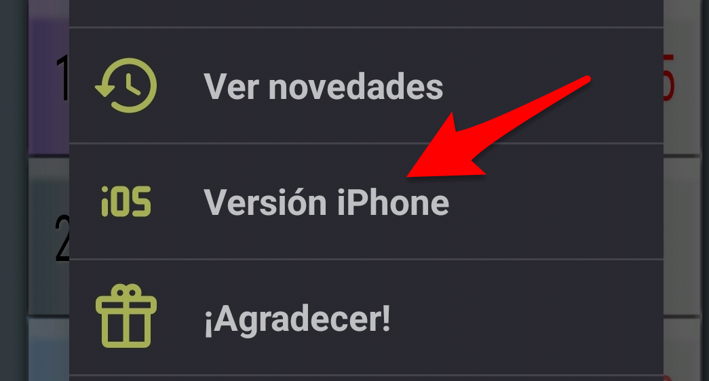

Historial de Cambios
¡Nuevo Modo Comparar!
Se ha rediseñado completamente la utilidad de comparar turnos para que sea más útil y clara:
- Vista de 2 Semanas: Ahora verás 14 días simultáneamente con todos los turnos desglosados (6 filas).
- Mejor legibilidad: Las letras de los turnos ahora son más oscuras y fáciles de leer.
- Navegación ágil:
- Desliza horizontalmente para avanzar/retroceder 1 semana.
- Desliza verticalmente para avanzar/retroceder 4 semanas.
- Cabecera dinámica: Muestra claramente el rango de fechas (ej: 19 Ene - 1 Feb).
- Indicadores visuales: Domingos y festivos resaltados en rojo.
Recordatorio: Incluye el calendario laboral actualizado para 2026.
¡Calendario 2026 disponible!
Actualización con el calendario para el año 2026. Recuerda que aunque se extrema el cuidado al volcar los datos: la jornada oficial es la que establece el calendario firmado por RE y RS.
Actualización con el calendario 2025. Disponible en Play Store.
- Solucionado problema de fechas en el Widget.
- Mejora visual: Ahora se ven marcas de los últimos días del mes anterior y primeros del siguiente (6 semanas visibles).

- Corrección en el diálogo de configuración de colores.
- Nuevo enlace directo a la versión iPhone. 
- Corregido fallo al marcar vacaciones sin Google Calendar instalado.
- Carga del calendario 2024.
- Corrección visual en el menú de Opciones para fuentes grandes.
- Visualización correcta de cambios (Vacaciones, turnos...) en días "grises" (mes anterior/posterior).
- Corregido error visual al cambiar turnos.
- Se añade listado de novedades al menú:
- La opción "Seleccionar calendarios" se ha movido al menú de opciones para limpiar la interfaz.
- Se muestra la hora en los eventos del calendario.
- Mejoras en la actualización automática del Widget.
- Copia de seguridad en la nube.
- Inicio de sesión con Google.
Nuevas marcas visuales añadidas:
También se añade filtro para cuentas de eventos.
Qadrant App © 2026